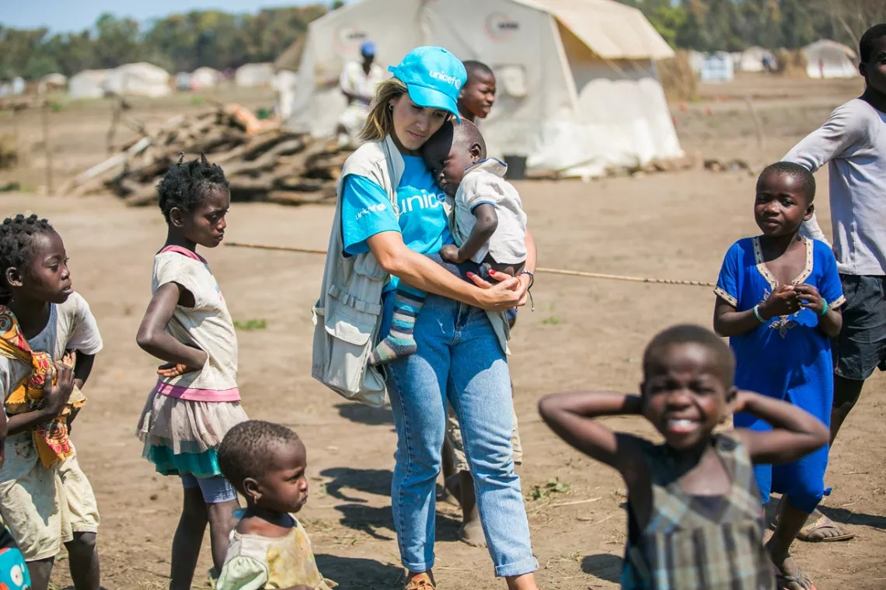
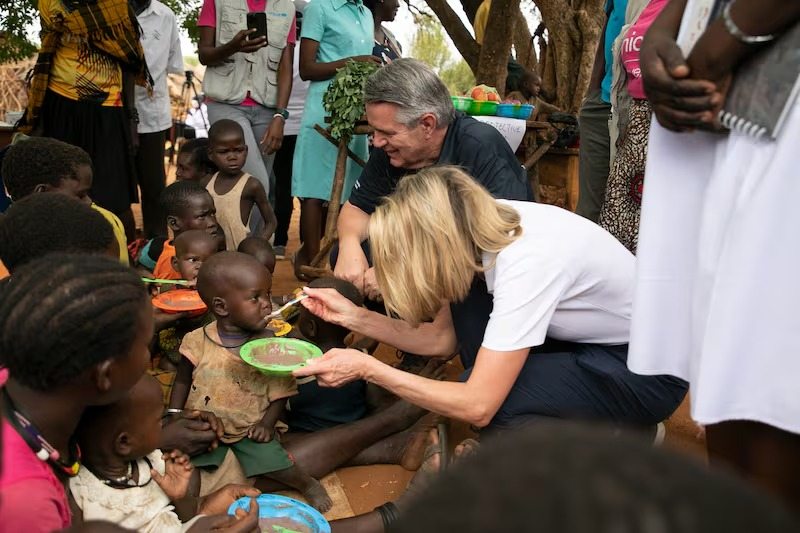
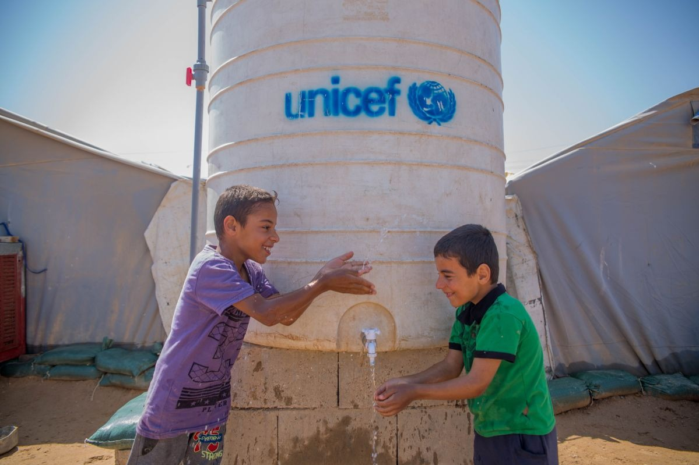
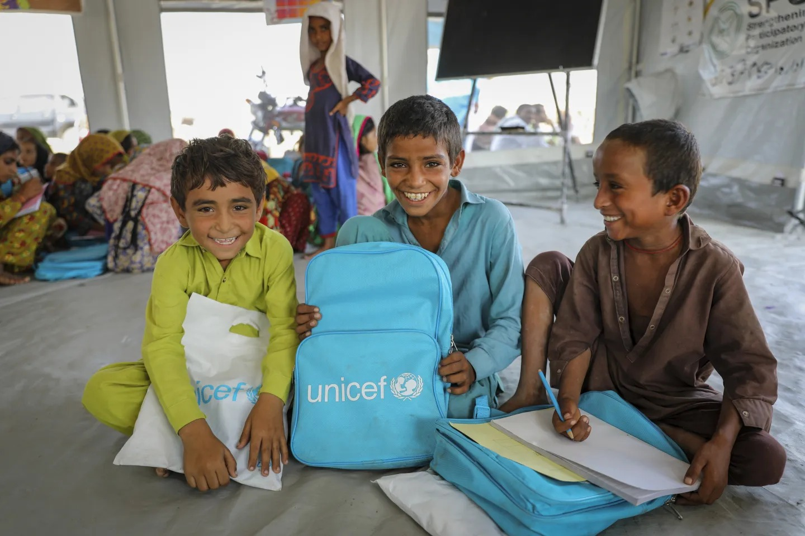
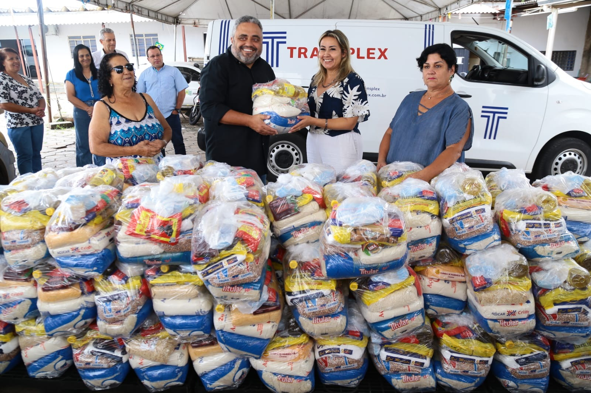

Sobre o Save World
Nossa iniciativa
O Save World nasceu da ideia de que ajudar deve ser simples. Muitas igrejas, associações e grupos de voluntários fazem um trabalho enorme, mas controlam doações em cadernos, mensagens e planilhas espalhadas. Nossa iniciativa reúne tudo em um só lugar, de forma clara e acessível.
Nossa missão
Aproximar quem quer ajudar de quem precisa, com transparência: cada campanha mostra a meta, o prazo, quem doou e o que ainda falta.
O que oferecemos
- Campanhas de dinheiro, alimentos e roupas, com barra de progresso.
- Lista de materiais necessários, para saber exatamente como ajudar.
- Voluntariado, para quem quer doar tempo ou serviços.
- Cadastro das campanhas de organizações beneficentes parceiras, feito pela nossa equipe.
Nossos valores
Transparência, simplicidade e solidariedade.
Vídeo da iniciativa
Mural de fotos




